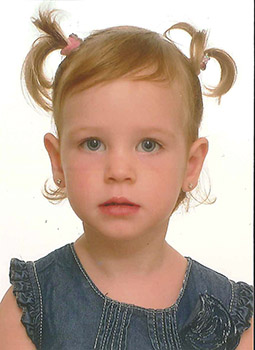

Marta Minguet Castillo
Marta Minguet Castillo 

This page is within a frameset. View the entire genealogy report of Minguet Castillo families, or surname index of Minguet Castillo pedigrees or report summary of Minguet Castillo heritage from "Árbol Genealógico de Manolo y Amalia".
Family Tree.
© 2006 GenoPro Inc. All Rights Reserved.